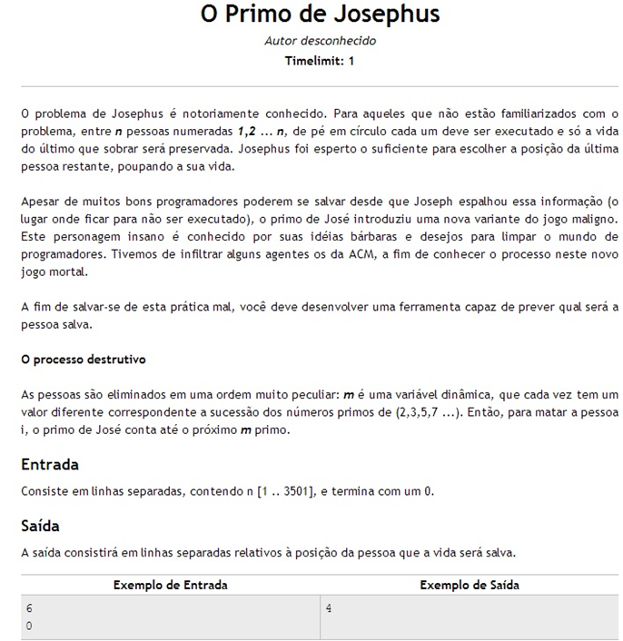

#define MaratonasDeProgramação(){
i++
Por: Fellipe Augusto Alves Gurgel
Globo Repórter
[Fonte: Tumblr]
O que são? Como são? Quais os tipos? Descubra os mistérios e as curiosidades sobre as tais
MARATONAS DE PROGRAMAÇÃO
Hoje, no Globo Repor... Ops, na printf entendemos um pouco da importância e da influência que as Maratonas de Programação têm desempenhado na nossa sociedade.
Rsrsrs, brincadeiras a parte... Se você não leu aquelas fontes que eu indiquei na página anterior, ainda não sabe ao certo o que são estas maratonas. Espero, sinceramente, que tenha entendido a importância de programar, de competir intelectualmente e como se preparar para a "Copa da Computação"!
Sem perceber, você deve ter concluído que as Maratonas de Programação são competições que testam a agilidade, a precisão e o raciocínio (sob pressão) na resolução de problemas, em equipes ou individualmente.
A Copa Mundial de Programação: ACM-ICPC
A ACM (Association for Computing Machinery - Associação para Maquinaria da Computação) foi a primeira, e ainda a maior, sociedade cientifica e educacional dedicada a Computação. E é ela a responsável por organizar a ICPC (International Collegiate Programming Contest - "Maratona Universitária Internacional de Programação"), a Copa do Mundo de Programação, com a participação de no máximo uma equipe por Universidade.
Como numa Copa, existem pré-seleções até a competição mundial. São elas:
-
Nas Universidades: todas as equipes de uma Universidade competem entre si e até duas dessas continuarão na Maratona. Nesta etapa, as Universidades têm autonomia para organizar o evento da maneira que estas melhor julgarem;
Regional: cada Universidade do país está alocada em uma divisão regional e cada uma destas tem uma sede, (confira AQUI o mapa das regiões e sedes). As equipes selecionadas nas Universidades competem agora com todas as equipes da região na sede. Dependendo do tamanho da região, são selecionadas até 4 equipes para a Nacional Brasil. As Regionais são organizadas pela SBC (Sociedade Brasileira de Computação) e apoiada pela(s) Universidade(s) e principais empresas locais. A partir desta etapa, as regras da ICPC são estritamente respeitadas;
Nacional Brasil: são no máximo duas equipes por Universidade. Escolhe-se uma sede no Brasil para que todas as equipes campeãs de cada região possam competir para a Mundial. Por exemplo, a sede da nossa região é justamente Uberlândia que, coincidentemente, também será a sede da Nacional Brasil esse ano. O apoio parte das principais Universidades e empresas da sede, que ajudam na organização do evento junto à SBC.
O Formato
Durante a prova, os competidores recebem um caderno de questões, que tem de 8 a 12 problemas, e aqueles têm em média 5 horas para resolver a maior quantidade de problemas usando as linguagens de programação C, C++ ou Java. Um ranking é montado considerando a quantidade de questões completadas e o tempo. A cada problema resolvido, o time ganha um balão e sobe nesse ranking, e a cada submissão errada a equipe é penalizada no tempo.
Cada problema tem uma cor de balão diferente. Os balões recebidos indicam quantos e quais problemas a sua/outra equipe acertou. Servem principalmente para motivar e/ou pressionar os competidores.
Os times podem consultar apenas algum material impresso que possuírem.
Cada problema é composto por um trecho para contextualização, informações gerais para dar sentido ao problema, instruções e exemplos sobre a entrada que será fornecida e a saída que será exibida.

Exemplo de problema
O BOCA
O BOCA é um software que controla a competição, o meio de comunicação entre os competidores e os juízes. O mesmo é testado antes da competição no período que chama-se warmup, período de aquecimento das equipes.
As opções disponíveis no BOCA, são:
Problems: para visualizar as questões da prova, bem como as cores dos balões de cada problema;
Runs: onde os maratonistas submetem suas soluções e recebem as respostas dos juízes. É muito importante ficar atento ao formulário para submissão: verificar o nome do arquivo sugerido do enunciado da questão, linguagem utilizada e formato de saída. Lembrando que, nos últimos minutos da competição, os maratonistas não recebem mais respostas dos juízes, para aumentar o suspense da prova.
Tradicionalmente, os juízes enviam respostas como:
| Resposta | Descrição |
| YES | O programa foi aceito, e você receberá um balão da cor correspondente ao problema. |
| NO: Incorrect Output | Também conhecido como Wrong Answer. Indica que seu programa respondeu incorretamente a algum(ns) dos testes dos juízes. |
| NO: Time-limit Exceeded | A execução do seu programa excedeu o tempo permitido pelos juízes. Esse limite de tempo usualmente não é divulgado aos times e pode variar para cada problema. |
| NO: Runtime Error | Durante o teste ocorreu um erro de execução (causado pelo seu programa) na máquina dos juízes. Acesso a posições irregulares de memória ou estouro dos limites da máquina são os erros mais comuns. |
| NO: Compilation Error | Seu programa tem erros de sintaxe. Pode ser ainda que você errou o nome do problema ou linguagem no momento da submissão. |
| NO: Output Format Error | Também conhecido como Presentation Error, indica que a saída do seu programa não segue a especificação exigida na folha de questões, apesar do "resultado" estar correto. Corrija para se adequar à especificação do problema. |
| NO: Contact Staff | Você deve pedir a presença do pessoal de staff (ajudante da organização), pois algum erro incomum aconteceu. |
Esta tabela foi retirada do Manual BOCA
Score: nessa opção consta o placar atualizado da competição que é congelado nos instantes finais de prova, aumentando ainda mais a pressão sob as equipes;
Clarifications: único meio de fazer perguntas para os juízes sobre algum problema específico ou no aspecto geral da prova. As perguntas respondidas às outras equipes também estarão visíveis nessa opção, logo, atualizá-la constantemente é muito importantes;
Tasks: em caso de problemas com o computador ou a equipe precise imprimir algo, esta pode pedir ajuda aos staffs (ajudantes da organização) nessa opção;
A melhor maneira de se adaptar ao BOCA é usando. Praticando.
Prêmios
Além dos prêmios pessoais, do reconhecimento perante a sociedade e do prestígio das grandes empresas, maratonistas competem por prêmios em dinheiro relativamente altos (cerca R$15.000,00 na mundial), vagas em empresas renomadas (Google, Microsoft, IBM, entre outras) e prêmios materiais (Tablets, Notebooks de última geração, etc). Esses prêmios podem variar conforme a Maratona.
Referências:
}